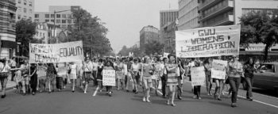

Top 10 Events of the Civil Rights Movement
By: David
1. Brown v. Board of Education (1954)
Brown v. Board of Education (1954): The Landmark Case That Changed America Forever
The Brown v. Board of Education Supreme Court case is often hailed as the catalyst for the Civil Rights Movement. At the heart of the case was the issue of segregation in schools, which was rampant in the 1950s in America. In essence, the case argued that segregation in schools was unconstitutional, and the Supreme Court agreed. This landmark ruling was a significant turning point for civil rights in the United States.
Before Brown v. Board of Education, the U.S. had a system of separate but equal schools. This meant that black students were relegated to inferior schools, with substandard facilities, funding, and educational resources compared to their white peers. In the Brown case, a group of African American parents in Topeka, Kansas, argued that segregation was making their children feel inferior and was denying them equal educational opportunities.
The Supreme Court was unanimous in its decision that segregation in schools violated the Constitution's Equal Protection Clause. It noted that separate educational facilities could never be truly equal. This decision paved the way for the integration of public schools throughout the country, allowing black children the opportunity to attend the same schools as their white counterparts.
The Brown v. Board of Education decision was a long overdue acknowledgment that segregation in schools and other public facilities was a fundamental violation of fundamental human rights. It provided the legal framework and clear precedent for future Civil Rights Movement victories, and it stands as a powerful symbol of the struggle for equal rights for all Americans.
In conclusion, the Brown v. Board of Education Supreme Court case is widely regarded as one of the most significant events in the Civil Rights Movement. Its impact was immediate and far-reaching, leading the way for the integration of public schools and paving the way for a broader struggle for social justice and equality. The case's legacy lives on, and it continues to inspire new generations to fight for a more just and equitable world.
ad space
2. Montgomery Bus Boycott (1955-1956)
For 381 days, the Montgomery Bus Boycott sparked a city-wide protest by African Americans refusing to ride on segregated buses in Montgomery, Alabama. On December 1, 1955, a promising civil rights activist and seamstress, Rosa Parks, refused to give up her seat to a white passenger, resulting in her arrest. Her courageous action was not the first of its kind, but it brought the issue of desegregation to the forefront, propelled the civil rights movement, and set off one of the most significant events in American history.
The bus boycott was a success thanks to the leadership of Reverend Martin Luther King Jr. and the Montgomery Improvement Association (MIA), which planned the protest and coordinated carpooling systems for commuters. The MIA also launched a series of legal challenges against the segregated bus systems, which eventually led to the Supreme Court's ruling in Browder v. Gayle that segregation on buses was unconstitutional.
However, the boycott came at a high cost to those involved in the movement. Protesters faced violence, intimidation, arrest, and even lost their jobs as a result of their participation. Nevertheless, their steadfastness and determination demonstrated the power of nonviolent resistance in the face of opposition, and the boycott set the standard for future civil rights movements.
Today, the Montgomery Bus Boycott remains a testament to the courage, perseverance, and sacrifices of those who fought for equality during the civil rights movement. It serves as a reminder of the long-lasting impact that a single action can have in shaping history and inspiring change.
ad space
3. Little Rock Nine (1957)
On September 4th, 1957, nine bright-eyed African American students arrived at Little Rock Central High School, ready to enroll in classes and fight for their rights. What they didn't anticipate was the hatred and violence they would face from their white counterparts and surrounding community.
The Little Rock Nine, as they would come to be known, faced intense opposition from both students and adults, who refused to accept the integration of their schools. Crowds gathered outside the school, spewing racial slurs and threats at the students as they attempted to enter the building.
Despite the danger, the Little Rock Nine remained resolute in their determination, withstanding physical abuse, verbal harassment, and even riots. Elizabeth Eckford, one of the young students, famously stated, "I was not afraid. I was too angry to be afraid."
Their bravery and persistence led to a landmark decision by the Supreme Court, who ruled that the racial segregation of schools was unconstitutional. The Little Rock Nine's courageous actions paved the way for future civil rights victories, inspiring generations of activists to fight for equality and justice.
Today, their legacy lives on, as the Little Rock Central High School National Historic Site continues to educate visitors on the importance of the civil rights movement and its impact on society. The Little Rock Nine's fight for justice and equality remains an inspiration to all those who dare to challenge systemic oppression and fight for a better future.
ad space
4. Sit-In Movement (1960)
In 1960, the Sit-In Movement marked a turning point in the civil rights movement. African American college students in Greensboro, North Carolina, organized a peaceful protest against the exclusion of Black patrons from dine-in restaurants. As a result, about 3000 students staged sit-ins across the country in support, and many were arrested for trespassing and disturbing the peace. This movement challenged the established practice of segregation and set the stage for similar protests in the following years.
The Sit-In Movement was a critical moment in the civil rights movement, as it showed that peaceful protest could bring about change. Before the sit-ins, most civil rights protests had been violent and confrontational. The students' calm, dignified protests caught the attention of the media and the public, forcing many Americans to confront the reality of segregation and discrimination. The sit-ins also demonstrated the power of nonviolent resistance, a tactic that would become the hallmark of the civil rights movement.
The Sit-In Movement inspired similar protests across the country, leading to the desegregation of many public places. It also galvanized the civil rights movement and paved the way for other nonviolent protests, such as the freedom rides and marches. The movement also attracted the support of many white Americans and helped to break down racial barriers.
Today, the sit-ins remain an important symbol of the civil rights movement and a source of inspiration for those fighting for justice and equality. By remembering and studying this moment in history, we can continue to learn from the struggles and sacrifices of those who came before us and work towards a more just and equitable society.
ad space
5. Freedom Rides (1961)
In the midst of the Civil Rights Movement, a group of brave individuals set out to challenge segregation laws in interstate transportation. Known as the Freedom Riders, these activists set out on a journey through the South to test the ruling of the Supreme Court that banned segregation in interstate travel.
The Freedom Rides began on May 4, 1961, when 13 riders boarded a Greyhound bus in Washington D.C. destined for New Orleans. They were met with fierce resistance in the form of mob violence, beatings, and arrests at various stops throughout the South. The riders were met with brutal opposition from white, segregationist mobs who went to great lengths to stop them. The violence and arrests grew to such an extent that Attorney General Robert F. Kennedy had to intervene, sending federal marshals to protect the riders.
Despite the danger, the Freedom Riders persevered, and their determination and bravery brought national attention to the issue of segregation in interstate travel. The movement sparked a wave of activism, and soon, hundreds of people joined their cause, traveling throughout the South to challenge segregation.
Finally, after more than six months, the Interstate Commerce Commission issued new rules prohibiting segregation in interstate travel. The Freedom Rides marked a significant milestone in the Civil Rights Movement, leading to the integration of bus terminals across the country and the eventual signing of the Civil Rights Act in 1964.
Today, the Freedom Rides serve as a reminder of the power of peaceful protest and the bravery of those who risked their lives to fight for justice and equality. The bravery and selflessness of the Freedom Riders have inspired generations to stand up against injustice and to pursue a more just and equitable society.
ad space
6. March on Washington for Jobs and Freedom (1963)
The March on Washington for Jobs and Freedom (1963) was a pivotal moment in the Civil Rights Movement. It was a peaceful demonstration with more than 250,000 people who marched through the streets of Washington, D.C. to demand equal rights for Black Americans.
The March was organized by a group of civil rights organizations, including the NAACP, the SCLC, and the SNCC. The organizers had a long list of demands, including the end to segregation in schools, better voting rights for Black Americans, and the passing of a comprehensive civil rights bill.
The March was a resounding success, and it was the speech given by Dr. Martin Luther King Jr. that truly captured the attention of the nation. His famous "I Have a Dream" speech was a powerful call to action, and it inspired many Americans to join the fight for civil rights.
But the March wasn't just about Dr. King's speech. It was also a remarkable example of peaceful civil disobedience. The police allowed the march to proceed without incident, and this showed the power of nonviolent protest.
The March on Washington for Jobs and Freedom was a critical moment in the struggle for civil rights. It showed that peaceful protest can be a powerful tool for change, and it inspired millions of Americans to join the fight for equal rights.
ad space
7. Civil Rights Act of 1964
The Civil Rights Act of 1964: A Landmark Moment in History
The passage of the Civil Rights Act of 1964 marked a turning point in American history. This landmark legislation was the culmination of years of social activism and political struggle, and it had a profound impact on the lives of millions of people across the country.
The act addressed a wide range of issues related to civil rights, including voting rights, desegregation of schools and public spaces, and employment discrimination. It prohibited discrimination on the basis of race, color, religion, sex, or national origin in any program or activity that received federal funding.
The act was signed into law by President Lyndon B. Johnson on July 2, 1964, after a long and contentious battle in Congress. Its passage was the result of years of activism by civil rights leaders such as Martin Luther King, Jr., and it represented a major victory for the civil rights movement.
The impact of the Civil Rights Act was immediate and far-reaching. Within a few years of its passage, significant progress had been made toward dismantling the legal barriers that had kept African Americans and other minority groups from participating fully in American society.
Although the struggle for civil rights continued for many years after the passage of the act, it remains one of the most significant events in American history. Its legacy continues to be felt today, as people continue to fight for equality and justice for all.
ad space
8. Voting Rights Act of 1965
The Voting Rights Act of 1965: Securing the Right to Vote for All Americans
The Civil Rights Movement was a pivotal time in American history that dramatically changed the country's social, political, and cultural landscape. African Americans fought for their rights and freedoms, seeking to break down the systemic barriers of discrimination and racial segregation that plagued the nation for centuries. After decades of struggle, the Civil Rights Movement achieved one of its most significant victories with the passage of the Voting Rights Act of 1965.
The Voting Rights Act of 1965 was a monumental achievement that secured the right to vote for all African Americans, finally eliminating the discriminatory laws and practices that had prevented them from exercising their constitutional rights. The act empowered the federal government to oversee and enforce voting rights in states with a history of discrimination, significantly increasing African American voter participation and representation. From the halls of Congress to local elections, the Voting Rights Act fundamentally transformed the political landscape of America.
Prior to the Voting Rights Act, African Americans faced numerous obstacles when attempting to vote. Discriminatory laws, such as poll taxes, literacy tests, and other Jim Crow laws, effectively disenfranchised millions of black Americans. Many states also used intimidation, violence, and other underhanded tactics to suppress the African American vote, denying them their fundamental right to have their voices heard.
With the passage of the Voting Rights Act, these barriers were finally removed, allowing all Americans to exercise their constitutional rights and participate in the democratic process. Today, the Voting Rights Act remains a powerful symbol of hope, equality, and justice, inspiring future generations to promote and defend civil rights and political freedoms for all.
ad space
9. Selma to Montgomery March (1965)
The Selma to Montgomery March of 1965 is, without a doubt, one of the most pivotal events in the history of the Civil Rights Movement. As the ninth entry in our countdown of the top 10 events of the Civil Rights Movement, this landmark protest signifies the struggle for voting rights for Black Americans and the power of nonviolent resistance. This event saw countless acts of courage, dedication, and perseverance; it is a story that deserves to be told and retold.
On March 7, 1965, more than 600 activists, led by John Lewis and Hosea Williams, set out on a march to demand an end to discriminatory laws that prevented African Americans from casting their vote. However, as the protesters crossed the Edmund Pettus Bridge in Selma, Alabama, they were met with brutal violence and police brutality, including tear gas and billy clubs. This violent confrontation, which became known as Bloody Sunday, was a pivotal moment in the battle against segregation and white supremacy.
Despite the violence, the protesters refused to back down, and following a series of negotiations with the federal government, the march resumed on March 21, 1965. This time, the protesters were escorted by the National Guard, and the march stretched over 50 miles, ending in the Alabama capital, Montgomery. The Selma to Montgomery March was a display of resilience and solidarity as it united thousands of people in the fight for racial equality, and it helped to bring about the passage of the Voting Rights Act of 1965, a monumental victory for the Civil Rights Movement.
The Selma to Montgomery March has become a symbol of courage, determination, and the power of peaceful resistance. It remains an essential event in American history for its role in the advancement of civil rights and social justice. Today, it serves as a reminder of the brave individuals who fought for equal rights and paved the way for a more just and equitable society.
ad space
10. Assassination of Martin Luther King Jr. (1968)
The Assassination of Martin Luther King Jr.: The Tragic End of a Leader
Perhaps one of the most well-known events of the Civil Rights Movement, the assassination of Martin Luther King Jr. in 1968 was a tragic end to a leader who had dedicated his life to promoting equality for African Americans.
Dr. King's death marked a turning point in the movement, sparking riots and uprisings across the country. It was a stark reminder that racism and discrimination were still very much alive in America, and that the fight for civil rights was far from over.
But Dr. King's legacy lived on, as his death only served to galvanize the movement even further. In the years following his assassination, landmark legislation was passed to protect the rights of African Americans, including the Fair Housing Act and the Voting Rights Act.
Today, we honor Dr. King's memory not just as a Civil Rights leader, but as a symbol of hope and inspiration for people all over the world who are fighting for justice and equality.
As we reflect on the tragic events of April 4, 1968, we are reminded that there is still much work to be done to achieve Dr. King's dream of a world where all people are treated equally regardless of their race, gender, or socio-economic status.
But we can take heart in the fact that Dr. King's legacy continues to inspire people from all walks of life to pursue justice and fight for a better tomorrow. And perhaps, with hard work and dedication, we can make that dream a reality one day.
ad space
Conclusion
The Civil Rights Movement was a pivotal moment in history, and looking back at the Top 10 events of the movement, it is clear that it shaped the United States in profound ways. The events that unfolded during this time — from the Montgomery Bus Boycott to the Voting Rights Act of 1965 — served as catalysts for monumental change and progress, ultimately paving the way for equal rights and opportunities for all. As we come to a conclusion on this journey through the Top 10 Events of the Civil Rights Movement, it is important to reflect on the lessons that can be drawn from this turbulent period in our nation's history.
One of the key takeaways from the Civil Rights Movement is the power of collective action. The success of the Montgomery Bus Boycott and the March on Washington would not have been possible without the tireless efforts of countless individuals who banded together in pursuit of a common goal. It was this sense of solidarity that enabled everyday people to effect real change and push society forward.
Another lesson from the Civil Rights Movement is the importance of persistence. The struggle for civil rights was a long and arduous one, marked by setbacks, challenges, and moments of disappointment. However, the leaders and activists who fought for change refused to give up, and their tenacity ultimately paid off. Their unwavering commitment to justice serves as an inspiration to all those who seek to create a better world.
As we look back on the Top 10 events of the Civil Rights Movement, it is clear that this period in history was a defining moment for our nation. The bravery, courage, and resilience of those who fought for equal rights and justice serves as a testament to the human spirit, and reminds us that change is always possible, no matter how daunting the task may seem.
ad space